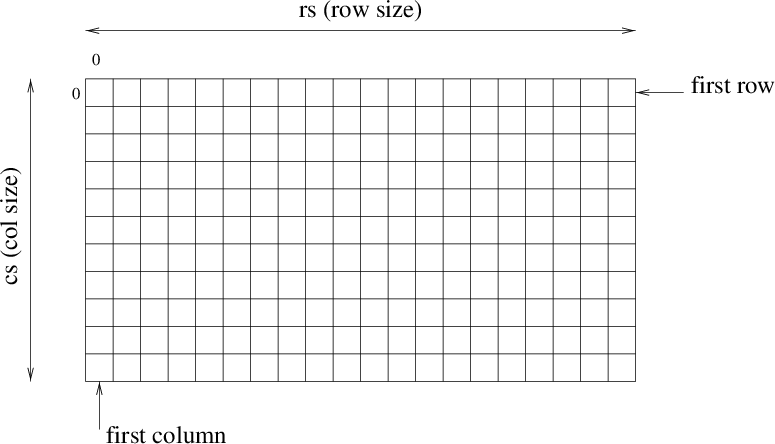

This environment aims at facilitating the development of your first image processing operators. It includes features such as input/output that allows reading and writing grey-scale images, under the pgm format. pgm stands for Portable Gray Map, and this is the name of a standard format. Pinkdev also proposes a data structure allowing to manipulate image pixels, once an image is loaded into memory.
To visualize images, any standard tool can be used. We recommand imview, but are not sure it is available everywhere at ESIEE. You can install it at home, following this link http://hugues.zahlt.info/Imview.html.
An image is seen as a rectangular table, with two dimensions of pixels or picture elements. The intensity of each pixel (its grey level) es thus given by a byte (unsigned char, value between 0 and 255).

In memory, an image is stored in a structure of type xvimage:
While using this structure, the array imagedata is a one dimensional array whose size depends on the size of the image to store. If the image is of size m × n, then imagedata is of size mn. Pixels are stored in this array in the following order.
To access a pixel we first need to get the address of the array that contains the pixels:
Then, to access the ith pixel of the jth row, we can use the following:
Here is an example of a laddconst function that add a constant value to the greyscale value of each pixel, unless such an operation will overflow 255. The source code is located in: src/lib/laddconst.c, the header file is: include/laddconst.h:
Of course, we need a main to compile this fucntion. The main has to do the three following operations: to read the image from a file, to call the laddconst function, and to store the result in another file.
Reading an image from a file with the pgm format is dont thanks to a call to the function readimage:
This function returns a NULL pointer if the reading did not run correctly. The function readimage is defined in src/lib/mcimage.c, while the header is in include/mcimage.h.
Writing an image in the pgm format is done thanks to a call to the function writeimage:
The function writeimage is defined in src/lib/mcimage.c, while the header is in include/mcimage.h.
In a call to readimage, a xvimage structure is automatically allocated. To allocate an xvimage structure without a call to readimage, we can use the function allocimage:
To free the allocated memory, we can use the function freeimage:
The functions allocimage and freeimage are defined in src/lib/mcimage.c, while the headers are in include/mcimage.h.
Here is a main that calls the function laddconst (source: src/com/addconst.c):
doc : documentation
include : header files (.h)
obj : object files (.o)
bin : executables
src/com : sources of the programs that will be run from shell
src/lib : sources of the basic (mcimage) and processing functions